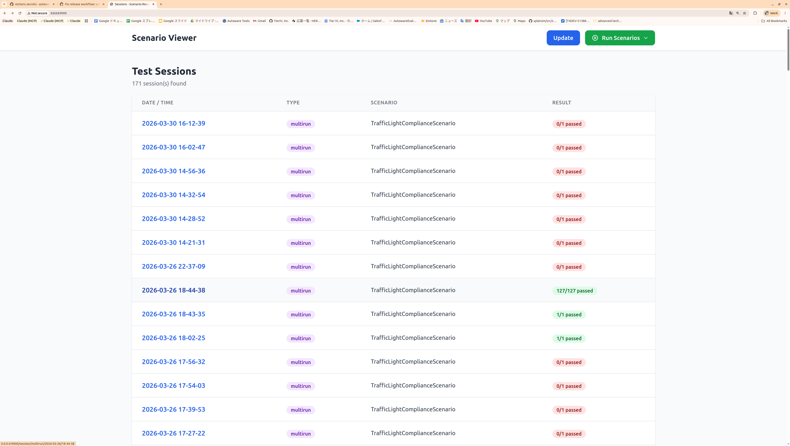
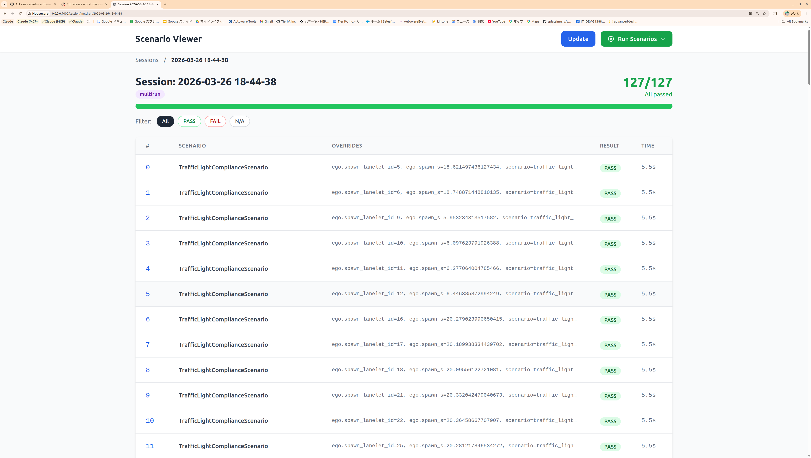
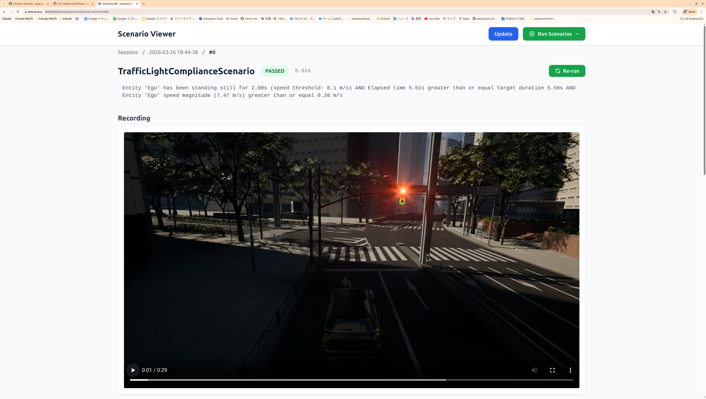
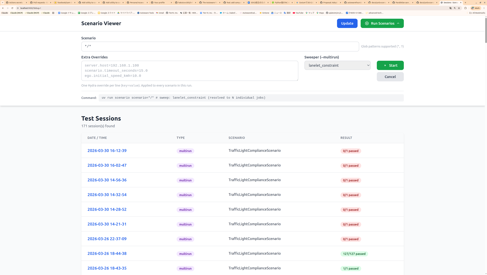

Tutorial: Writing Your First Scenario¶
This tutorial shows two paths to creating a scenario:
- Quick Start (recommended) — Use the bundled Claude Code plugin. Describe what you want in plain text and let Claude generate all files.
- Manual walkthrough — Understand every file by building one yourself.
Quick Start with Claude Code Plugin¶
This repository ships a write-scenario plugin inside
.claude/local-marketplace/. It is pre-enabled in .claude/settings.json
— no extra setup is needed. Just open Claude Code in the repository root
and the plugin is ready to use.
How It Works¶
Type /write-scenario followed by a natural-language description of the
test you want. Claude walks you through a 7-stage workflow automatically:
| Stage | What Claude does |
|---|---|
| 1. Understand | Parses your description, asks clarifying questions |
| 2. Discover | Scans the codebase for available Conditions, Actions, Constraints, and Bindings |
| 3. Write | Generates all four files: Python class, config dataclass, YAML, and run.py registration |
| 4. Debug | Runs the scenario in CARLA, reads logs, fixes failures iteratively |
| 5. Review | Analyzes parameter orthogonality and sweeper compatibility |
| 6. Sweep | Adds sweep.constraints / bindings to the YAML for parametric testing |
| 7. Multirun | Provides the exact command to execute the logical scenario across the map |
Example¶
> /write-scenario I want to test that the ego stops at a stop sign,
waits 3 seconds, then proceeds through the intersection.
Claude will:
- Identify
StandstillConditionandTimeoutConditionfrom the codebase - Generate
my_scenario.py, updateconfigs.py, create YAML, register inrun.py - Run the scenario, analyze the result, and iterate until it passes
- Propose sweep constraints so the test generalizes to every stop sign on the map
You do not need to memorize the framework API — the plugin discovers everything dynamically.
Other Plugin Commands¶
| Command | When to use |
|---|---|
/write-scenario |
Create a new scenario from scratch |
/debug-concrete-scenario |
An existing scenario fails — analyze logs and fix |
/review-scenario |
Before adding sweep — check parameter design |
The rest of this page explains the manual process. Read on if you want to understand what the plugin generates under the hood.
Key Concepts¶
| Term | What it is | File type |
|---|---|---|
| Abstract scenario | Reusable Python class that defines what to test (conditions, actions, entities). | *.py |
| Config dataclass | Typed parameters the scenario accepts (timeout, speed, lanelet IDs, ...). | *.py |
| Concrete scenario | YAML file that binds an abstract scenario to specific parameter values. | *.yaml |
One abstract scenario can have many concrete variants (straight, left turn, right turn, etc.).
Step 1 — Create the Config Dataclass¶
Add your config to src/autoware_carla_scenario/examples/configs.py:
@dataclass
class MyScenarioConfig:
"""Parameters for my custom scenario."""
name: str = "my_scenario"
#: Lanelet IDs the ego should visit.
expected_lanelet_ids: list[int] = field(default_factory=lambda: [460])
#: Fail-safe timeout in seconds.
timeout_seconds: float = 10.0
Every field becomes overridable from the YAML side via Hydra.
Step 2 — Create the Abstract Scenario¶
Create src/autoware_carla_scenario/examples/my_scenario.py:
from __future__ import annotations
from autoware_carla_scenario import (
EGO_ROLE_NAME,
AndCondition,
BaseScenario,
EgoConfig,
EntityLanePositionCondition,
GroundProjectionConfig,
Lanelet2Pose,
StickyCondition,
TimeoutCondition,
to_opendrive,
)
from .configs import MyScenarioConfig
class MyScenario(BaseScenario):
"""Verify the ego visits every expected road."""
def __init__(
self,
ego_config: EgoConfig,
spawn_pose: Lanelet2Pose,
config: MyScenarioConfig | None = None,
ground_projection: GroundProjectionConfig | None = None,
) -> None:
super().__init__(
ego_config, spawn_pose=spawn_pose,
ground_projection=ground_projection,
)
self._config = config or MyScenarioConfig()
def setup(self) -> None:
# 1. Snap ego spawn to CARLA road surface
self._setup_ego_spawn()
cfg = self._config
# 2. Build pass condition — "ego visited all expected roads"
stickies = []
for ll_id in cfg.expected_lanelet_ids:
od = to_opendrive(Lanelet2Pose(lanelet_id=ll_id, s=0.0))
stickies.append(
StickyCondition(
EntityLanePositionCondition(
entity_name=EGO_ROLE_NAME,
road_id=od.road_id,
)
)
)
self.register_pass_condition(AndCondition(stickies))
# 3. Fail-safe timeout
self.register_fail_condition(
TimeoutCondition(cfg.timeout_seconds, label="timeout")
)
def is_done(self) -> bool:
return False
Anatomy of setup()¶
Every scenario follows the same structure:
- Spawn — call
self._setup_ego_spawn()(snaps the Lanelet2 pose to the CARLA road surface). - Pass conditions — register one or more conditions via
self.register_pass_condition(). When all pass conditions are met the scenario succeeds. - Fail conditions — register via
self.register_fail_condition(). If any fail condition triggers first, the scenario fails. - Actions (optional) — e.g.
TurnAction,TrafficSignalAction.
Discovering available Conditions and Actions
Run grep -r "class.*Condition" src/autoware_carla_scenario/conditions/ and
grep -r "class.*Action" src/autoware_carla_scenario/actions/ to see
everything the framework provides.
Step 3 — Register the Scenario¶
In src/autoware_carla_scenario/examples/run.py, add the import and
registration:
from .my_scenario import MyScenario
from .configs import MyScenarioConfig
register_scenario("my_scenario", MyScenario, MyScenarioConfig)
The first argument ("my_scenario") is the name referenced in YAML's
scenario.name field.
Prefer a separate package for reusable scenarios
register_scenario (and register_conf_dir) are part of the public API:
from autoware_carla_scenario import register_scenario. If your scenario is
not meant to ship inside the framework, put it in its own package instead of
editing run.py — see
Packaging Scenarios in a Separate Package.
Step 4 — Write a Concrete Scenario (YAML)¶
Create src/autoware_carla_scenario/examples/conf/scenario/my_scenario/default.yaml:
# @package _global_
scenario:
name: my_scenario
expected_lanelet_ids: [460, 265]
timeout_seconds: 8.0
ego:
initial_speed_kmh: 5.0
spawn_lanelet_id: 242
spawn_s: 25.0
# @package _global_
This Hydra directive is required on the first line. It tells Hydra to merge the file into the root config, not into a nested key.
Minimal checklist¶
- [x]
scenario.namematches the registered name ("my_scenario") - [x]
ego.spawn_lanelet_idis a valid lanelet ID in the target map - [x]
ego.spawn_sis within the lanelet length
Step 5 — Run It¶
# Single run
uv run scenario scenario=my_scenario/default
# Batch — run all variants under my_scenario/
uv run scenario scenario='my_scenario/*'
# Override a parameter on the fly
uv run scenario scenario=my_scenario/default scenario.timeout_seconds=20.0
Step 6 — Check Results in the Viewer¶
# Start the viewer (defaults to port 9000)
uv run viewer
# Or point at a specific output directory
VIEWER_BASE_PATH=outputs uv run viewer
Open http://localhost:9000 in your browser. The viewer has three levels of navigation:
1. Session list¶
The top page lists every test session with its timestamp, run type
(multirun / single), scenario name, and overall result.

Each row is color-coded: green for all-passed, red if any scenario failed. Click a session to drill down.
2. Session detail¶
Inside a session you see every concrete scenario that was executed. For multirun (sweep) sessions, this can be hundreds of rows — each with its parameter overrides, individual PASS/FAIL badge, and execution time.

The progress bar and counter at the top (e.g. 127/127 All passed) give an at-a-glance summary. Use the PASS / FAIL / N/A filter buttons to narrow the list.
3. Concrete scenario detail¶
Click any row to open the detail view for a single concrete scenario. Here you can see:
- Pass/Fail status and elapsed time
- Condition tree — the evaluated condition expression showing exactly which sub-conditions were met
- Recording — a video captured from CARLA during the scenario execution

The Re-run button in the top-right corner lets you re-execute the same scenario directly from the viewer.
4. Running scenarios from the viewer¶
You can also launch scenario runs directly from the browser without using the CLI. Click the Run Scenarios dropdown in the top-right corner to open the run form.

The form lets you configure:
- Scenario — a glob pattern to select which scenarios to run (e.g.
*/*for all scenarios) - Extra Overrides — Hydra overrides applied to every scenario in the run
(one
key=valueper line, e.g.server.host=192.168.1.100) - Sweeper — select
lanelet_constraintto run a multirun sweep across matching lanelets
Click Start to begin execution. The generated command is shown at the bottom of the form for reference. Results appear in the session list below once the run completes — click Update to refresh.
Additional notes¶
- The viewer scans
outputs/(single/batch runs) andmultirun/(sweep runs) for*_result.jsonfiles. Click Update if you ran a scenario while the viewer was open.
Adding Sweep (Parametric Testing)¶
To test the same scenario across many lanelets automatically, add a sweep
section to the YAML:
# @package _global_
scenario:
name: my_scenario
expected_lanelet_ids: [460, 265]
timeout_seconds: 8.0
ego:
initial_speed_kmh: 5.0
spawn_lanelet_id: 242
spawn_s: 25.0
sweep:
constraints:
ego.spawn_lanelet_id:
- type: and
constraints:
- type: lanelet_length
rule: greater_than_or_equal
value: 10.0
- type: not
constraint:
type: is_junction
Run as a multirun:
The sweeper evaluates constraints against the Lanelet2 map and generates one
job per matching lanelet. Results appear under multirun/ in the viewer.
Packaging Scenarios in a Separate Package¶
The manual walkthrough above adds scenarios inside autoware_carla_scenario
(examples/configs.py, examples/my_scenario.py, examples/run.py,
conf/scenario/...). That is fine for scenarios shipped with the framework, but
for your own scenarios it is often better to keep them — and their config
dataclasses — in a separate, installable package that depends on the
framework. This keeps your scenarios reusable and versioned independently, with
no fork of autoware_carla_scenario.
A ready-to-copy template lives at
examples/scenario_package_template/.
Quickest path — generate one with scenario-new¶
Instead of copying the template by hand, generate a fresh package (the files below are rendered from Jinja2 templates):
# scenario-new <package-name> [--scenario NAME] [--output-dir DIR]
scenario-new reach_goal_pkg --scenario reach_goal
This writes a ready-to-install package:
reach_goal_pkg/
├── pyproject.toml # name + entry point filled in
└── src/reach_goal_pkg/
├── __init__.py # register() wired up
├── reach_goal.py # ReachGoalScenario
├── configs.py # ReachGoalConfig
└── conf/scenario/reach_goal/default.yaml
The same generator is available programmatically:
from autoware_carla_scenario.scaffold import create_scenario_package
create_scenario_package("reach_goal_pkg", scenario_name="reach_goal",
output_dir="~/pkgs")
The rest of this section explains what the generated files contain.
What a scenario package needs¶
| Piece | Where | API used |
|---|---|---|
| Scenario class | your package *.py |
subclass BaseScenario |
| Config dataclass | your package configs.py |
plain @dataclass |
| Concrete YAML | your package conf/scenario/<name>/*.yaml |
Hydra |
| Registration | your package __init__.py |
register_scenario, register_conf_dir |
| Discovery | your pyproject.toml |
autoware_carla_scenario.scenarios entry point |
Register at import time¶
Everything you need is part of the framework's public API — import it from
the top-level package, not from examples:
# my_scenario_package/__init__.py
from pathlib import Path
from autoware_carla_scenario import register_conf_dir, register_scenario
from .configs import MyScenarioConfig
from .my_scenario import MyScenario
def register() -> None:
register_scenario("my_scenario", MyScenario, MyScenarioConfig)
register_conf_dir(Path(__file__).parent / "conf")
Shared parameters (ego, map, server, entity, ...) are also public, so
your config module reuses them instead of redefining them:
Advertise the entry point¶
In your package's pyproject.toml, declare the entry point so the scenario
CLI discovers your register() automatically when the package is installed:
[project.entry-points."autoware_carla_scenario.scenarios"]
my_scenario_package = "my_scenario_package:register"
Run it — no framework edits required¶
uv pip install -e path/to/my_scenario_package
# Your scenario is discoverable by name, exactly like a built-in:
uv run scenario scenario=my_scenario/default map=nishishinjuku
uv run scenario scenario='my_scenario/*' map=nishishinjuku
At start-up the runner calls load_scenario_plugins(), which loads every
installed autoware_carla_scenario.scenarios entry point (registering your
scenarios and conf/ directory). A bundled Hydra SearchPathPlugin then adds
every registered conf/ directory to Hydra's search path. The map, ego,
server, and entity config groups still come from the framework's built-in
conf/, so your package only ships the scenario/ group it actually owns.
No entry point? Register explicitly.
If you prefer not to rely on entry-point discovery (e.g. from a custom
runner script), just call your register() — or register_scenario /
register_conf_dir directly — before invoking the runner. The entry point
is only what lets the stock scenario CLI find you automatically.